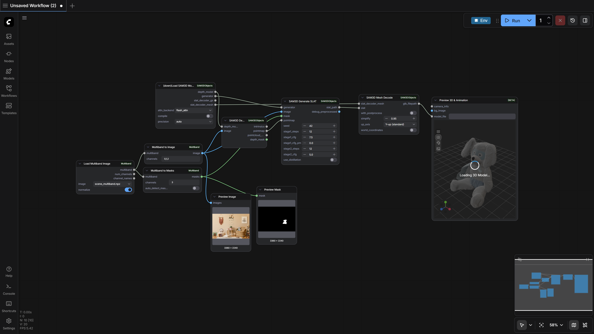
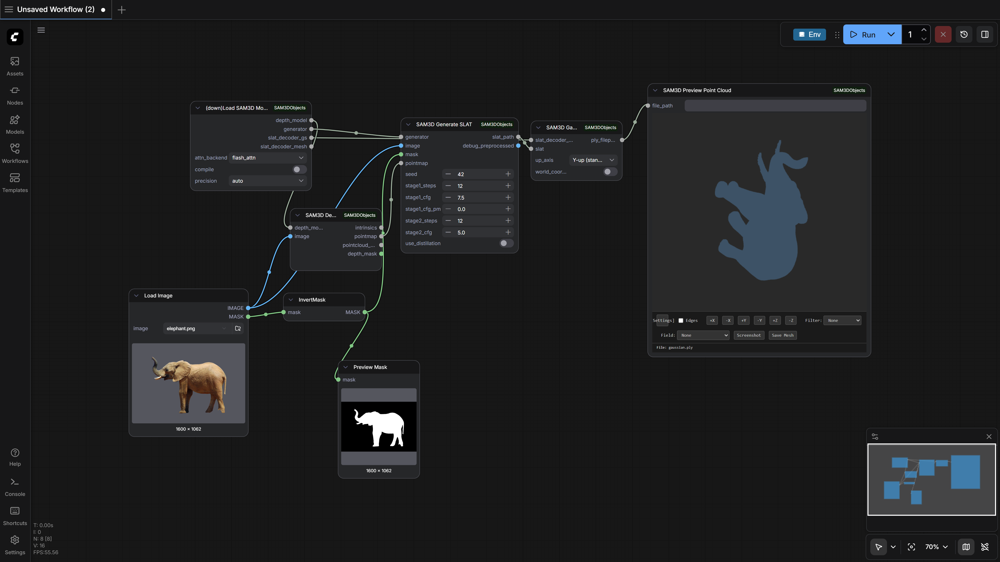
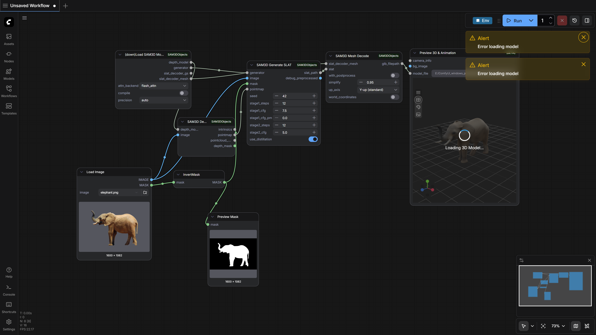

80.0%
4 passed
1 failed
4/5 tests
Workflows

debug_large_image_results
pass

full_generation
pass

gaussian_generation
pass

mesh_generation
pass
No screenshot
scene_generation
fail
Failed Tests
scene_generation
1851.15s
Workflow execution failed: {'prompt_id': '74489756-c51b-4023-85a1-6b578e94e77d', 'node_id': '100', 'node_type': 'SAM3D_ProjectionOverlay', 'executed': ['78', '99', '80', '87', '77', '59', '82', '106', '85', '74', '75'], 'exception_message': '(\'Unable to load EGL library\', "Could not find module \'EGL\' (or one of its dependencies). Try using the full path with constructor syntax.", \'EGL\', None)\n\nWorker traceback:\nTraceback (most recent call last):\n File "C:\\ce\\_env_e1841e\\.pixi\\envs\\default\\Lib\\site-packages\\OpenGL\\platform\\egl.py", line 67, in EGL\n return ctypesloader.loadLibrary(\n ^^^^^^^^^^^^^^^^^^^^^^^^^\n File "C:\\ce\\_env_e1841e\\.pixi\\envs\\default\\Lib\\site-packages\\OpenGL\\platform\\ctypesloader.py", line 45, in loadLibrary\n return dllType( name, mode )\n ^^^^^^^^^^^^^^^^^^^^^\n File "C:\\ce\\_env_e1841e\\.pixi\\envs\\default\\Lib\\ctypes\\__init__.py", line 379, in __init__\n self._handle = _dlopen(self._name, mode)\n ^^^^^^^^^^^^^^^^^^^^^^^^^\nFileNotFoundError: ("Could not find module \'EGL\' (or one of its dependencies). Try using the full path with constructor syntax.", \'EGL\', None)\n\nDuring handling of the above exception, another exception occurred:\n\nTraceback (most recent call last):\n File "C:\\WINDOWS\\TEMP\\comfyui_pvenv_qn0909n8\\persistent_worker.py", line 1143, in main\n result = method(**inputs)\n ^^^^^^^^^^^^^^^^\n File "E:\\ComfyUI_windows_portable\\ComfyUI\\custom_nodes\\ComfyUI-SAM3DObjects\\nodes\\projection_overlay.py", line 179, in create_overlay\n overlay = self._render_3d_mesh_textured(loaded_meshes, img_array, K, alpha, H, W)\n ^^^^^^^^^^^^^^^^^^^^^^^^^^^^^^^^^^^^^^^^^^^^^^^^^^^^^^^^^^^^^^^^^^^^^^^\n File "E:\\ComfyUI_windows_portable\\ComfyUI\\custom_nodes\\ComfyUI-SAM3DObjects\\nodes\\projection_overlay.py", line 352, in _render_3d_mesh_textured\n renderer = pyrender.OffscreenRenderer(W, H)\n ^^^^^^^^^^^^^^^^^^^^^^^^^^^^^^^^\n File "C:\\ce\\_env_e1841e\\.pixi\\envs\\default\\Lib\\site-packages\\pyrender\\offscreen.py", line 31, in __init__\n self._create()\n File "C:\\ce\\_env_e1841e\\.pixi\\envs\\default\\Lib\\site-packages\\pyrender\\offscreen.py", line 135, in _create\n from pyrender.platforms import egl\n File "C:\\ce\\_env_e1841e\\.pixi\\envs\\default\\Lib\\site-packages\\pyrender\\platforms\\egl.py", line 25, in <module>\n _ensure_egl_loaded()\n File "C:\\ce\\_env_e1841e\\.pixi\\envs\\default\\Lib\\site-packages\\pyrender\\platforms\\egl.py", line 22, in _ensure_egl_loaded\n plugin.install(vars(OpenGL.platform))\n File "C:\\ce\\_env_e1841e\\.pixi\\envs\\default\\Lib\\site-packages\\OpenGL\\platform\\baseplatform.py", line 92, in install\n namespace[ name ] = getattr(self,name,None)\n ^^^^^^^^^^^^^^^^^^^^^^^\n File "C:\\ce\\_env_e1841e\\.pixi\\envs\\default\\Lib\\site-packages\\OpenGL\\platform\\baseplatform.py", line 14, in __get__\n value = self.fget( obj )\n ^^^^^^^^^^^^^^^^\n File "C:\\ce\\_env_e1841e\\.pixi\\envs\\default\\Lib\\site-packages\\OpenGL\\platform\\egl.py", line 93, in GetCurrentContext\n return self.EGL.eglGetCurrentContext\n ^^^^^^^^\n File "C:\\ce\\_env_e1841e\\.pixi\\envs\\default\\Lib\\site-packages\\OpenGL\\platform\\baseplatform.py", line 14, in __get__\n value = self.fget( obj )\n ^^^^^^^^^^^^^^^^\n File "C:\\ce\\_env_e1841e\\.pixi\\envs\\default\\Lib\\site-packages\\OpenGL\\platform\\egl.py", line 73, in EGL\n raise ImportError("Unable to load EGL library", *err.args)\nImportError: (\'Unable to load EGL library\', "Could not find module \'EGL\' (or one of its dependencies). Try using the full path with constructor syntax.", \'EGL\', None)\n\n', 'exception_type': 'comfy_env.isolation.workers.base.WorkerError', 'traceback': [' File "E:\\ComfyUI_windows_portable\\ComfyUI\\execution.py", line 527, in execute\n output_data, output_ui, has_subgraph, has_pending_tasks = await get_output_data(prompt_id, unique_id, obj, input_data_all, execution_block_cb=execution_block_cb, pre_execute_cb=pre_execute_cb, v3_data=v3_data)\n ^^^^^^^^^^^^^^^^^^^^^^^^^^^^^^^^^^^^^^^^^^^^^^^^^^^^^^^^^^^^^^^^^^^^^^^^^^^^^^^^^^^^^^^^^^^^^^^^^^^^^^^^^^^^^^^^^^^^^^^^^^^^^^^^^^^^^^^^^^^^^^^^^^^^^^^\n', ' File "E:\\ComfyUI_windows_portable\\ComfyUI\\execution.py", line 331, in get_output_data\n return_values = await _async_map_node_over_list(prompt_id, unique_id, obj, input_data_all, obj.FUNCTION, allow_interrupt=True, execution_block_cb=execution_block_cb, pre_execute_cb=pre_execute_cb, v3_data=v3_data)\n ^^^^^^^^^^^^^^^^^^^^^^^^^^^^^^^^^^^^^^^^^^^^^^^^^^^^^^^^^^^^^^^^^^^^^^^^^^^^^^^^^^^^^^^^^^^^^^^^^^^^^^^^^^^^^^^^^^^^^^^^^^^^^^^^^^^^^^^^^^^^^^^^^^^^^^^^^^^^^^^^^^^^^^^^^^^^^^^^^^^^^^^^^^^^^^^^^^^^^\n', ' File "E:\\ComfyUI_windows_portable\\ComfyUI\\execution.py", line 305, in _async_map_node_over_list\n await process_inputs(input_dict, i)\n', ' File "E:\\ComfyUI_windows_portable\\ComfyUI\\execution.py", line 293, in process_inputs\n result = f(**inputs)\n', ' File "E:\\ComfyUI_windows_portable\\python_embeded\\Lib\\site-packages\\comfy_env\\isolation\\metadata.py", line 352, in proxy\n result = worker.call_method(\n module_name=mod,\n ...<4 lines>...\n timeout=600.0,\n )\n', ' File "E:\\ComfyUI_windows_portable\\python_embeded\\Lib\\site-packages\\comfy_env\\isolation\\workers\\subprocess.py", line 2376, in call_method\n raise WorkerError(\n ...<2 lines>...\n )\n'], 'current_inputs': {'pose_opt_folder': ['E:\\ComfyUI_windows_portable\\ComfyUI\\output\\sam3d_scene_1_pose_optimized'], 'render_mode': ['3d_mesh_textured'], 'point_size': [2], 'alpha': [0.6]}, 'current_outputs': ['78', '99', '80', '87', '108', '59', '77', '82', '85', '106', '74', '75', '100'], 'timestamp': 1771942201041}
Details:
Workflow: E:\ComfyUI_windows_portable\ComfyUI\custom_nodes\ComfyUI-SAM3DObjects\workflows\scene_generation.json
Node error: SAM3D_ProjectionOverlay
Downloaded Models
41 files · 13.9 GBmodels/sam3dobjects/
ss_generator.safetensors6.2 GB
slat_generator.safetensors4.6 GB
moge_vitl.safetensors1.2 GB
dinov2_vitl14_reg.safetensors1.1 GB
slat_decoder_mesh.safetensors346.9 MB
slat_decoder_gs.safetensors163.5 MB
slat_decoder_gs_4.safetensors162.4 MB
ss_decoder.safetensors140.8 MB
ss_generator.yaml5.0 KB
pipeline.yaml3.5 KB
slat_generator.yaml1.9 KB
slat_decoder_gs.yaml576.0 B
slat_decoder_gs_4.yaml575.0 B
moge_vitl_config.json343.0 B
slat_decoder_mesh.yaml300.0 B
ss_decoder.yaml244.0 B
.cache\huggingface\download\moge_vitl.safetensors.metadata128.0 B
.cache\huggingface\download\slat_decoder_gs.safetensors.metadata128.0 B
.cache\huggingface\download\slat_decoder_mesh.safetensors.metadata128.0 B
.cache\huggingface\download\slat_generator.safetensors.metadata128.0 B
.cache\huggingface\download\ss_decoder.safetensors.metadata128.0 B
.cache\huggingface\download\dinov2_vitl14_reg.safetensors.metadata127.0 B
.cache\huggingface\download\slat_decoder_gs_4.safetensors.metadata127.0 B
.cache\huggingface\download\ss_generator.safetensors.metadata127.0 B
.cache\huggingface\download\moge_vitl_config.json.metadata104.0 B
.cache\huggingface\download\pipeline.yaml.metadata104.0 B
.cache\huggingface\download\slat_decoder_gs.yaml.metadata104.0 B
.cache\huggingface\download\slat_decoder_gs_4.yaml.metadata104.0 B
.cache\huggingface\download\slat_decoder_mesh.yaml.metadata104.0 B
.cache\huggingface\download\slat_generator.yaml.metadata104.0 B
.cache\huggingface\download\ss_decoder.yaml.metadata104.0 B
.cache\huggingface\download\ss_generator.yaml.metadata103.0 B
.cache\huggingface\.gitignore1.0 B
models/vae_approx/
taef1_encoder.safetensors2.4 MB
taesd3_encoder.safetensors2.4 MB
taef1_decoder.safetensors2.4 MB
taesd3_decoder.safetensors2.4 MB
taesdxl_decoder.safetensors2.3 MB
taesd_decoder.safetensors2.3 MB
taesdxl_encoder.safetensors2.3 MB
taesd_encoder.safetensors2.3 MB